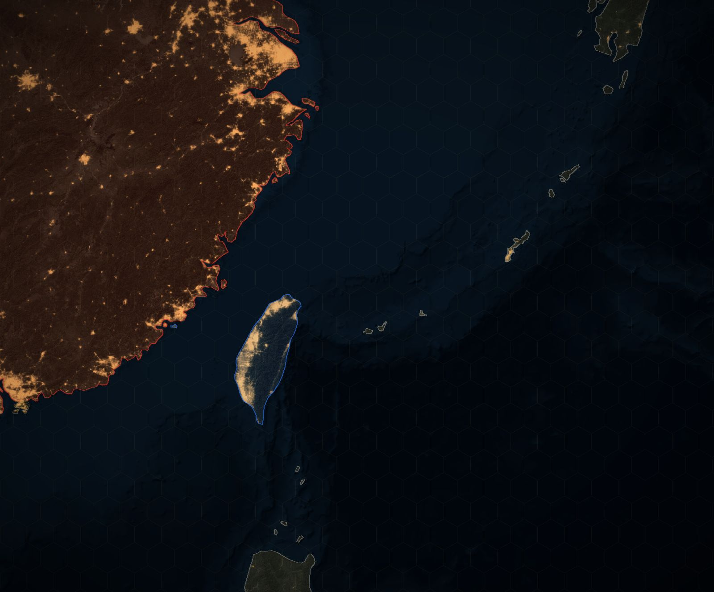

اگه چین سراغ تایوان بره
همین الان اوضاع کجاست، زنده روی نقشهٔ سهبعدی غرب اقیانوس آرام، از هاینان تا گوام و توکیو. بعد رزمایشهای دور تایوان رو دوباره ببینید، یا قرنطینه، محاصره یا تهاجم رو اجرا کنید و تعیین کنید آمریکا، ژاپن و فیلیپین چیکار کنن.
این مدل چطور کار میکنه
وقتی صفحه لود بشه، مدل همینجا نوشته میشه.
اتفاقهایی که قبلاً افتاده، با منبعهاشون
- سومین بحران تنگهٔ تایوان ۳۰ تیر ۱۳۷۴ تا ۶ فروردین ۱۳۷۵
بعد از اینکه لی تنگهوی، رئیسجمهور تایوان، تو دانشگاه کرنل سخنرانی کرد، چین سال ۱۹۹۵ به دریاهای شمال تایوان موشک شلیک کرد و سال ۱۹۹۶، قبل از اولین انتخابات مستقیم ریاستجمهوری تایوان، جلوی دو بندر اصلیش. آمریکا دو ناوگروه هواپیمابر فرستاد.
- رزمایشهای اوت ۲۰۲۲ بعد از سفر پلوسی ۱۳ مرداد ۱۴۰۱ تا ۱۹ مرداد ۱۴۰۱
بعد از سفر نانسی پلوسی، رئیس مجلس نمایندگان آمریکا، به تایپه، چین شش و بعد هفت منطقه دور تایوان رو بست و موشک بالستیک شلیک کرد که بعضیهاش از روی جزیره رد شدن. اولین بار بود که موشکهای چینی تو منطقهٔ اقتصادی ژاپن افتادن.
- شمشیر مشترک (آوریل ۲۰۲۳) ۱۹ فروردین ۱۴۰۲ تا ۲۱ فروردین ۱۴۰۲
بعد از دیدار تسای اینگون، رئیسجمهور تایوان، با کوین مککارتی، رئیس مجلس نمایندگان آمریکا، تو کالیفرنیا، ارتش چین سه روز گشت آمادگی رزمی دور تایوان برگزار کرد و ناو هواپیمابر شاندونگ شرق جزیره بود.
- شمشیر مشترک-2024A (مه ۲۰۲۴) ۳ خرداد ۱۴۰۳ تا ۴ خرداد ۱۴۰۳
سه روز بعد از تحلیف لای چینگته، ارتش چین دور تایوان و جزیرههای کینمن، ماتسو، ووچیو و دونگیین رزمایش کرد و گارد ساحلی هم بهش پیوست.
- شمشیر مشترک-2024B (اکتبر ۲۰۲۴) ۲۳ مهر ۱۴۰۳ تا ۲۳ مهر ۱۴۰۳
بعد از سخنرانی روز ملی لای، ارتش چین یه روز تو تنگه و شش منطقه دور تایوان رزمایش کرد و با چهار ناوگروه گارد ساحلی محاصرهٔ بندرها رو تمرین کرد.
- رزمایش زمستانی بینام (دسامبر ۲۰۲۴) ۱۹ آذر ۱۴۰۳ تا ۲۲ آذر ۱۴۰۳
چین بدون اسم و بدون اعلام، حدود ۹۰ کشتی نیروی دریایی و گارد ساحلی رو به اون طرف زنجیرهٔ اول جزیرهها فرستاد، بزرگترین استقرار دریایی تا اون روز.
- تندر تنگه-2025A (آوریل ۲۰۲۵) ۱۲ فروردین ۱۴۰۴ تا ۱۳ فروردین ۱۴۰۴
بعد از اینکه لای چین رو «نیروی خارجی متخاصم» خوند، ارتش چین دور تایوان رزمایش کرد، روز دوم رو «تندر تنگه-2025A» اسم گذاشت و حمله به بندرها و تأسیسات انرژی رو شبیهسازی کرد.
- مأموریت عدالت-۲۰۲۵ (دسامبر ۲۰۲۵) ۸ دی ۱۴۰۴ تا ۹ دی ۱۴۰۴
بعد از یه فروش تسلیحات آمریکا، ارتش چین با شلیک راکت جنگی محاصرهٔ کیلونگ و کائوهسیونگ رو تمرین کرد، اولین رزمایشی که هدف اعلامشدهش بازداشتن نیروهای خارجی بود.
- ۲۰۲۶: فشار بدون یه رزمایش اسمدار ۱۸ دی ۱۴۰۴ تا ۹ آبان ۱۴۰۵
تو ۲۰۲۶ هیچ رزمایش محاصرهٔ اسمداری برگزار نشده. پروازها به حدود نصف ۲۰۲۵ رسید در حالی که ناوهای جنگی موندن و کشتیهای گارد ساحلی و سازمان دریایی به شرق تایوان رفتن.
مشاورها و چیزی که منتشر کردن
- تیم CSIS (کنسیان، کنسیان، هگینبوتم) اندیشکدهٔ واشینگتنی؛ «اولین نبرد جنگ بعدی»، ژانویهٔ ۲۰۲۳
تو بیشتر ۲۴ اجرا، حمله تو ۲۰۲۶ شکست خورد، ولی آمریکا، ژاپن و تایوان بهاش رو با دهها کشتی، صدها هواپیما و دو ناو هواپیمابر دادن. منبع
- بانی لین مدیر پروژهٔ قدرت چین تو CSIS؛ پیشتر تو RAND و مدیر بخش چین پنتاگون
چین همین الان میتونه تایوان رو قرنطینه یا محاصره کنه؛ حمله سختترین گزینهست، و قرنطینه با گارد ساحلی همونیه که آمریکا کمتر از همه براش آمادهٔ جوابه. منبع
- دریاسالار فیلیپ دیویدسون (بازنشسته) فرماندهٔ سابق فرماندهی هند و اقیانوس آرام آمریکا
تهدید حرکت چین به طرف تایوان تو همین دهه واقعی میشه، در واقع تا حدود ۲۰۲۷. منبع
- دریاسالار ساموئل پاپارو فرماندهٔ فرماندهی هند و اقیانوس آرام آمریکا
حرکتهای ارتش چین دور تایوان تمرینه؛ آمریکا پیروز میشه، ولی سؤال اینه که چقدر از دست میده. منبع
- البریج کولبی معاون وزیر دفاع آمریکا در امور سیاستگذاری
چین تهدید اصلیه؛ آمریکا باید نیروهاش رو به آسیا ببره و یه دفاع انکاری از تایوان بسازه، و متحدهایی مثل ژاپن خیلی بیشتر کار کنن. منبع
- اوریانا اسکایلار ماسترو پژوهشگر مرکز FSI استنفورد؛ پژوهشگر غیرمقیم AEI
شی وقتی دست به زور میبره که باور کنه ارتش چین میتونه قبل از اینکه آمریکا وارد بشه تایوان رو بگیره، و ۲۰۲۷ نقطهٔ انفجار محتمله. منبع
- ایان ایستون دانشیار مؤسسهٔ مطالعات دریایی چین در دانشکدهٔ جنگ دریایی آمریکا؛ نویسندهٔ کتاب «تهدید حملهٔ چین»
حمله به تایوان بزرگترین و سختترین برنامهٔ جنگی ارتش چینه: ساحل کم، مدافعهای سنگرگرفته و فقط دو ماه هوای خوب تو سال. منبع
- لایل گلدستین (Defense Priorities) مدیر برنامهٔ آسیای Defense Priorities؛ مؤسسهٔ واتسون، دانشگاه براون
جنگ آمریکا با چین سر تایوان پرهزینهتر و غیرقابلبردتر از چیزیه که بیشتر برنامهریزها فکر میکنن، و تایوانی که دست چین باشه سکوی پرشی برای فتوحات بزرگتر نمیشه. منبع
- بلومبرگ اکونومیکس بخش پژوهش اقتصادی بلومبرگ
جنگ سر تایوان تو سال اولش حدود ۱۰٫۶ تریلیون دلار هزینه داره، نزدیک ۱۰٪ تولید ناخالص دنیا؛ حتی یه محاصره هم تولید دنیا رو ۵٫۳٪ کم میکنه. منبع
- سانائه تاکایچی نخستوزیر ژاپن
استفادهٔ چین از زور علیه تایوان با ناو جنگی میتونه یه «وضعیت تهدید بقا» باشه که به ژاپن اجازهٔ جنگیدن بده. منبع
- جامعهٔ اطلاعاتی آمریکا (ارزیابی سالانهٔ تهدید ODNI ۲۰۲۶) دفتر مدیر اطلاعات ملی آمریکا
رهبرهای چین برنامه ندارن تو ۲۰۲۷ حمله کنن و جدول زمانی ثابتی ندارن؛ ترجیح میدن بدون زور یکپارچه کنن در حالی که ارتش چین همچنان قویتر میشه. منبع
- وزارت دفاع ملی تایوان وزارت دفاع تایوان؛ گزارش قدرت نظامی چین ۲۰۲۶ و گزارشهای روزانه دربارهٔ ارتش چین
ارتش چین داره برنامههاش برای محاصره یا قرنطینهٔ تایوان رو، همراه با حملهٔ آتش و پیاده شدن آبیخاکی، دقیقتر میکنه. منبع
- INDSR (مؤسسهٔ پژوهش دفاع و امنیت ملی تایوان) اندیشکدهٔ دفاعی که دولت تایوان پولش رو میده
تمرکز روی ۲۰۲۷ کاری که ارتش چین میتونه بکنه رو با چیزی که شی قصدش رو داره قاطی میکنه؛ حملهٔ زودهنگام بعیده. منبع
- چتم هاوس اندیشکدهٔ لندنی
یه بحران تایوان خیلی بیشتر از بسته شدن هرمز به اروپا و اقتصاد دنیا ضربه میزنه، و پکن همین الان تو رزمایشهاش داره محاصره رو آزمایش میکنه. منبع
هر چیزی روی این نقشه از گزارشها و تحلیلهای منتشرشده اومده، هر کدوم با صفحهش. عددهای مشاورها برداشت منه از چیزی که هر کدوم منتشر کردن، نه حرف خودشون. این یه مدل برای فکر کردنه، نه پیشبینی. چیزی اشتباهه؟ تو گفتوگوی همین صفحه بگید تا بررسیش کنم.
حرکت بعدی رو کی میزنه، و آخرش چی میشه؟
همینجا بگید تا بقیه هم جوابتون رو بدن؛ فارسی یا انگلیسی.
گفتوگو
سناریوها
سناریوی خودتون، مشاوری که باید اضافه کنم، یا چیزی روی نقشه که اشتباه گذاشتم. اگه منبع دارید بیارید. اینا حرف خود خوانندههاست، نه حرف من.
اطلاعات خصوصی هیچکس رو ننویسید. قوانین گفتوگو و اطلاعاتی که از شما نگه میدارم